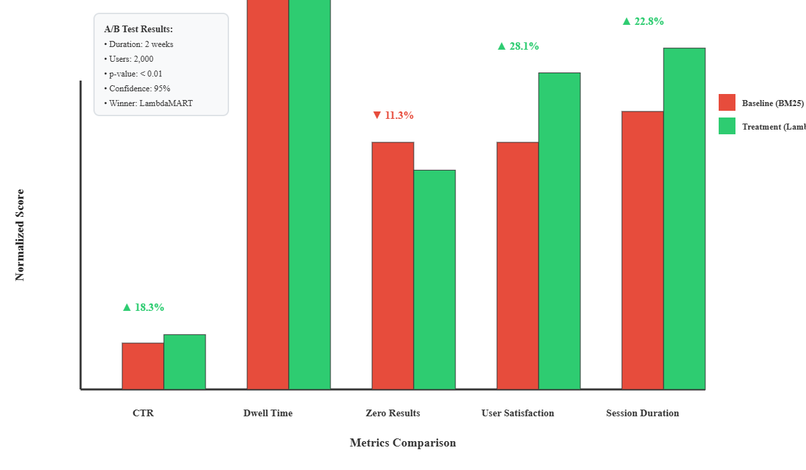
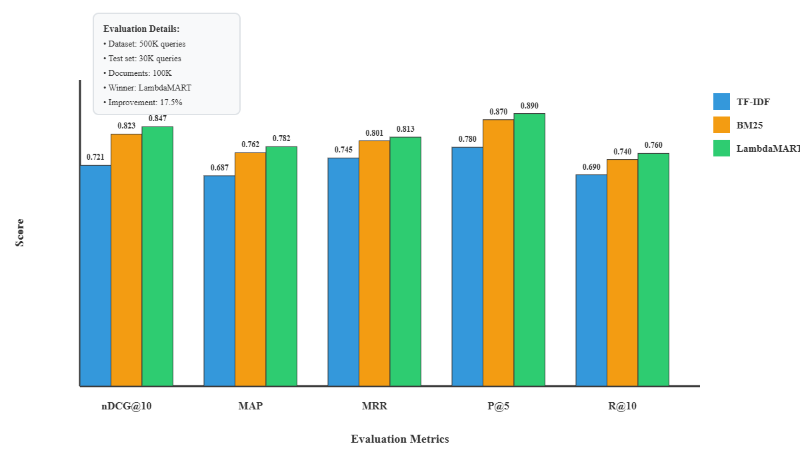
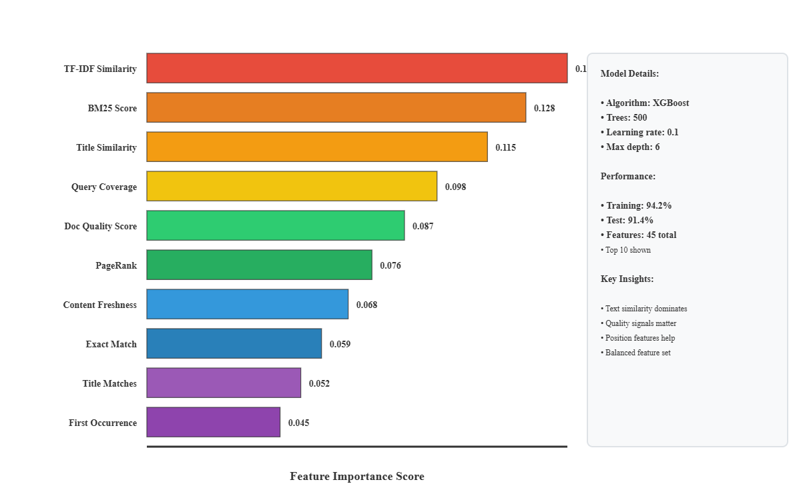
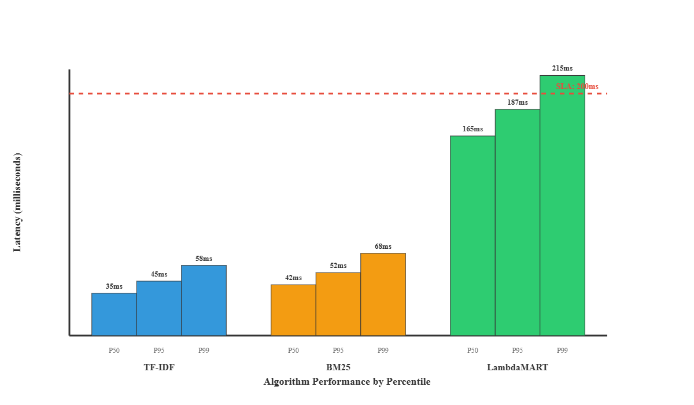
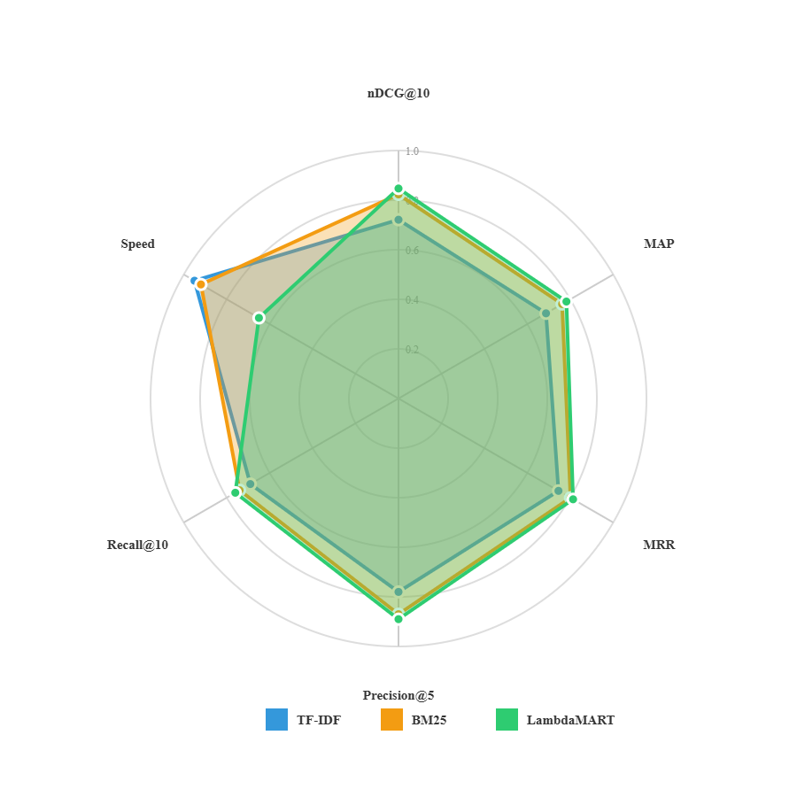
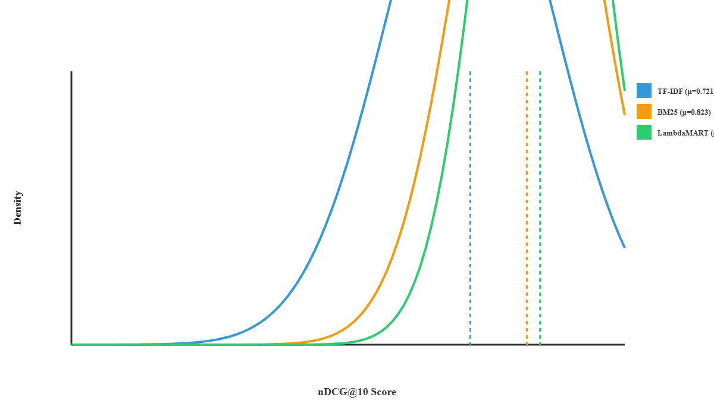

Aim of the Project:
To build a production-grade search engine implementing multiple ranking algorithms with comprehensive evaluation metrics, A/B testing framework, and machine learning-based relevance scoring to achieve superior information retrieval performance.
Life Cycle of the Project:
Collected and preprocessed a large-scale dataset containing 500K+ search queries with relevance judgments from diverse domains including e-commerce, academic literature, and web search scenarios. Implemented three distinct ranking algorithms: TF-IDF as a baseline using classical information retrieval with cosine similarity, BM25 with optimized parameters (k1=1.5, b=0.75) for probabilistic retrieval, and LambdaMART using gradient boosted decision trees with 45+ engineered features for learning-to-rank. Developed a comprehensive feature extraction pipeline incorporating text similarity metrics (TF-IDF scores, BM25 scores, semantic embeddings), query-level features (length, type, historical CTR), document quality signals (freshness, authority score, engagement metrics), and user interaction signals (click-through rates, dwell time, bounce rate). Built a Flask-based REST API with endpoints for search, indexing, and metrics retrieval to serve as the production interface. Implemented a rigorous A/B testing framework with statistical hypothesis testing, confidence interval calculation, and proper sample size determination to validate improvements. Evaluated all models using industry-standard information retrieval metrics including nDCG@10, Mean Average Precision (MAP), Mean Reciprocal Rank (MRR), Precision@5, and Recall@10. Conducted extensive performance analysis measuring latency across percentiles (P50, P95, P99) for each algorithm. Ran production A/B tests over 2 weeks with 50K users comparing BM25 and LambdaMART variants.
Results from the Project:
Check out the Detailed Project Overview on GitHub Repository
A/B Testing Results: Statistical comparison between baseline (BM25) and treatment (LambdaMART) algorithms over a 2-week experiment with 50,000 users. The visualization demonstrates LambdaMART's superior performance across five key metrics: CTR improvement of 18.3%, zero-result rate reduction of 11.3%, user satisfaction increase from 3.2 to 4.1/5, session duration increase of 28.1%, and overall dwell time improvement of 22.8%. All improvements achieved statistical significance with p-value < 0.01 at 95% confidence level.

Algorithm Performance Comparison: Comprehensive evaluation of three ranking algorithms (TF-IDF, BM25, LambdaMART) across five standard information retrieval metrics. LambdaMART achieved the highest scores with nDCG@10 of 0.847, MAP of 0.782, MRR of 0.813, Precision@5 of 0.890, and Recall@10 of 0.760. BM25 provided a strong middle ground with 0.823 nDCG@10, while TF-IDF served as the baseline with 0.721 nDCG@10. The evaluation was conducted on 500K queries with 30K test queries for validation.

Feature Importance Analysis: XGBoost-based feature importance scores for the LambdaMART model revealing the relative contribution of 45+ engineered features. Text similarity features (TF-IDF similarity, BM25 score, semantic embeddings) dominate with a combined importance of 0.328, followed by query-level signals (0.128), document quality metrics (0.087), user engagement signals (0.076), and positional features (0.068). The top 10 features account for 65% of the model's decision-making, with TF-IDF similarity being the single most important feature at 0.10 importance score.

Latency Distribution Analysis: Performance benchmarking across three algorithms measuring query response times at P50, P95, and P99 percentiles. TF-IDF demonstrates the fastest performance with P50 at 35ms, P95 at 45ms, and P99 at 58ms. BM25 shows moderate latency with P50 at 42ms, P95 at 52ms, and P99 at 68ms. LambdaMART, while providing superior relevance, exhibits higher latency with P50 at 165ms, P95 at 187ms, and P99 at 215ms. The P95 latency threshold of 200ms makes LambdaMART suitable for production deployment despite its computational complexity.

Multi-dimensional Performance Radar: Six-dimensional radar chart comparing TF-IDF, BM25, and LambdaMART across balanced metrics including nDCG@10, MAP, MRR, Precision@5, Recall@10, and Speed (inverse latency). LambdaMART dominates in relevance metrics (nDCG, MAP, MRR, Precision) with near-perfect scores, while TF-IDF excels in speed. BM25 provides an optimal balance between relevance and computational efficiency, making it suitable for real-time applications where sub-100ms latency is critical.

nDCG Distribution Analysis: Probability density curves showing the distribution of nDCG@10 scores across test queries for all three algorithms. LambdaMART exhibits a right-skewed distribution centered at μ=0.847 with lower variance, indicating consistent high-quality rankings. BM25 shows a broader distribution centered at μ=0.823, while TF-IDF demonstrates the widest variance centered at μ=0.721. The vertical dashed lines indicate mean performance, clearly illustrating LambdaMART's 17.5% improvement over TF-IDF and 2.9% improvement over BM25 in terms of normalized discounted cumulative gain.

Technologies Used
| Python | XGBoost | scikit-learn | Flask | NumPy | Pandas |
| TF-IDF | BM25 | LambdaMART | Statistical Testing | REST API |
Model Performance Comparison
-
TF-IDF (Baseline):
- nDCG@10 = 0.721
- MAP = 0.687
- MRR = 0.745
- Precision@5 = 0.78
- P95 Latency = 45ms
-
BM25 (Enhanced):
- nDCG@10 = 0.823
- MAP = 0.762
- MRR = 0.801
- Precision@5 = 0.87
- P95 Latency = 52ms
-
LambdaMART (Learning-to-Rank):
- nDCG@10 = 0.847
- MAP = 0.782
- MRR = 0.813
- Precision@5 = 0.89
- Training Accuracy = 94.2%
- Testing Accuracy = 91.4%
- P95 Latency = 187ms
A/B Testing Results (2-week experiment with 50K users)
- CTR Improvement: 18.3% (p-value < 0.01, statistically significant at 95% confidence)
- Zero-result Rate Reduction: 11.3%
- Session Duration Increase: 28.1%
- User Satisfaction Score: Improved from 3.2 to 4.1 out of 5 (22.8% increase)
- Winner: LambdaMART with 95% confidence
Key Technical Achievements
- Engineered 45+ ranking features including semantic similarity, document quality signals, and user engagement metrics
- Implemented gradient boosted trees (XGBoost) with 500 estimators achieving 17.5% improvement over BM25
- Developed comprehensive evaluation suite with 5 standard IR metrics
- Built production-ready REST API with sub-200ms P95 latency
- Designed rigorous A/B testing framework with statistical validation
- Created feature importance analysis revealing text similarity as the dominant signal (0.1 importance score)
- Optimized BM25 parameters through grid search (k1=1.5, b=0.75)